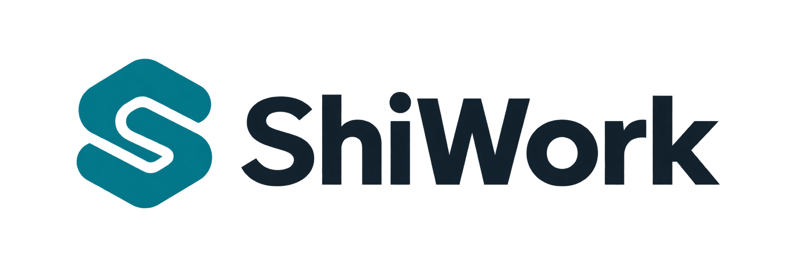
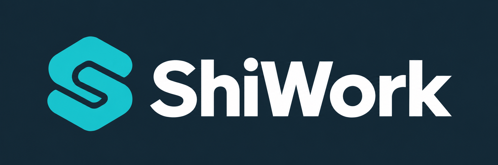
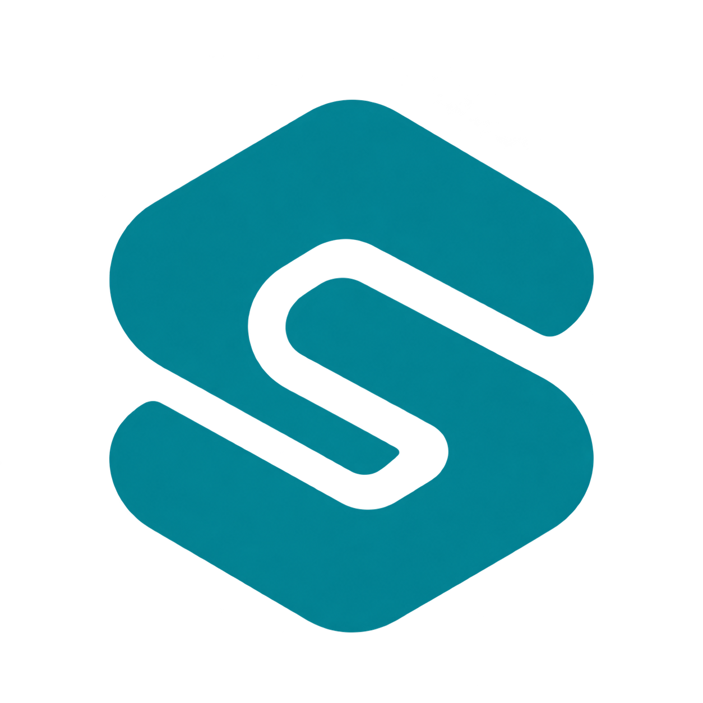

IDENTITY
ShiWork Logo
相扣的 S 图形，表达工作环节之间的连接。

主 Logo · 透明底 PNG · 浅色界面使用

深底版 · 深蓝背景 PNG · 展示及品牌封面使用

独立图标 · 透明底 PNG
名称统一写作 ShiWork，S 与 W 大写。主标识沿用青绿色与深蓝色；深色侧栏使用亮青色图形与白色字标。六张界面均已替换。
01
下载 PNG ↗今日工作
把待审核名单、询盘、跟进和报价放在一起，员工打开就知道今天先做什么。

02
下载 PNG ↗找客户
左边审客户名单，右边看匹配理由与原始证据，再决定通过、补查或淘汰。

03
下载 PNG ↗客户详情与跟进
同屏查看客户需求、邮件往来和 AI 回复草稿；保存内部记录与对外发送分开。

04
下载 PNG ↗投流分析
把广告花费、有效询盘、成交和收入放在同一张表里，判断哪个渠道值得继续投入。

05
下载 PNG ↗老板经营看板
看收入、广告成本、贡献收益和回款；设备与游戏币业务可以分别查看。

06
下载 PNG ↗产品资料
集中管理型号参数、说明书和报价条件，显示资料版本、来源与审核状态。